Home
About
Portfolio
Contact
– Arjay Ferrer • NetSuite Admin ⚙ • Systems Thinker 🧠 • Minimalist Aesthetic 🎯 • Purpose-Driven 📌 –
Scroll down to see the blur in effect behind this frosted header.
This is a long section to allow you to scroll the page and test the header behavior.
Keep scrolling — this confirms the backdrop-filter is active and the blur works on content behind.
You can adjust the background or add elements behind the header to test it better.
Done scrolling? You can now tweak spacing, shadow, and radius as needed.